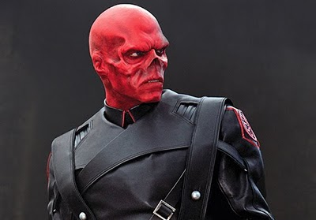

| Premier jet terminé et structure en place : à vous de prendre la suite (27/09/12) |
Sommaire
L'Eveil d'Eveil
Après l’apocalypse, 4 secteurs se sont distingués comme peuplés et ont, jusqu’à la découverte du voyage extra-sectoriel, fonctionnés en autarcie. L'histoire du secteur 1 a particulièrement marqué la Galaxie avec un conflit qui s'étendra sur plus de 80 cycles et touchera toute la galaxie.


La guerre du secteur 1
Initié par une sombre histoire de manipulation et de vol d'os, le conflit en secteur 1 commença avec l'agression de la chienne Yuki par le commandant Red Skull. Celui avait été embauché comme mercenaire par la représentante canine pour la reconquête d'un de ses mondes perdu aux mains des brigands. Mais il s'était vu reprocher le fait d'avoir tenté de faire chanter la chienne en exigeant des leems supplémentaires en échange de la planète. Dès cet instant, la santé mentale de la chienne - à qui l'on reprochait déjà de se balader à l'assemblée avec un string sacré sur la tête tout en urinant sur les commandants - fut définitivement considérée comme défaillante. Yuki reprocha aussi à Red Skull un complot mené de concert avec Brins pour s'emparer de la contrebande.
Devant ces accusations, le fédéré qui sera plus tard appelé "la tomate" ou "tomato skull" déclara la guerre à la chienne et commença à exterminer le peuple canin.
Après la prise de la Capitale Canine par le loup Amarok en punition des multiples crottes laissées à l'assemblée, Yuki fut exilée dans un vaisseau et Red Skull décida alors de signer la paix et de lui accorder une unique planète pour sa survie, clôturant l'incident canin.

La déclaration de guerre surprise
Attaquée par surprise par l'H.Y.D.R.A sans déclaration de guerre au préalabre, la SNCF perdit de nombreux mondes peu protégés et vit ses flottes se faire décimer en un éclair.
Profitant d’une économie plus forte du fait de leurs nombreuses possessions, l’H.Y.D.R.A conquit une à une les planètes de la SNCF, prenant même le système natif du Comte Rênyx et menaçant dangereusementcelui de Selfura Balthimore. Un Ping-pong d’invasion s’instaura dans certains systèmes solaires. Le plus gros coup que porta l'H.Y.D.R.A à la SNCF fut la prise de l'assemblée de coalition des nudistes dont les enregistrements furent rendus public, révélant l'intention de la SNCF d'entreprendre, dans un avenir plus ou moins proche, un action militaire à l'encontre de Red Skull. Ces archives firent beaucoup de remous à l'assemblée et entrainèrent une chute de popularité de la SNCF qui fut considérée comme un rassemblement de conspirateurs dont les plans avaient été percés à jour et méritait, en quelque sorte, cette guerre.
Souhaitant se venger de Red Skull, Yuki profita de la situation et céda sa dernière planète au Comte Rênyx, lui donnant une porte d'entrée directe dans le système natif de Red Skull. Cependant, la planète fut vite reprise par "tomato skull" et Yuki se retrouva sans planète [à continuer]
Cependant, après quelques cycles de préparation, la SNCF lança une offensive de grande envergure, reprit la majorité des planètes perdues et s’infiltra dans le système natal d’Alex Burton.

Le retour des nudistes
La bataille du système 7 marqua l’inversion de la tendance et le retour en force de la SNCF qui reprit un à un les systèmes perdus du secteur I. Ce changement du rapport de force intervient au moment de la découverte du voyage extra-sectoriel où l’H.Y.D.R.A décida de se concentrer sur la conquête galactique.
Cette période est aussi celle du départ du commandant Yersin de la SNCF qui, jugeant cette guerre inutile et sans fin, préféra se désolidariser du groupe.
Cet affrontement est la base d’un conflit qui durera plus d'une 100ène de cycles.
Histoire du secteur 2
A venir
Histoire du secteur 3
A venir

Le secteur 4 et la domination du Cartel Coopérante
Alors que la guerre faisait rage en secteur 1, le secteur 4 s'organisa autour du Cartel Coopérante dirigé par la Kalycia Entalya. Prônant l'entraide et favorisant l'échange technologique, cette coalition permit au secteur entier de rattraper son retard technologique sur les premiers arrivants du secteur 1. Parallèlement, Entalya embaucha un mercenaire et fit exiler les commandants Haddock, Batik et Morkram, tous trois renégats condamnés pour piratage et poussa le commandant Trois-Grammes au suicide, posant de réelles questions sur les intentions et buts du Cartel, et plus particulièrement ceux d'Entalya.
Plus tard, le Cartel Coopérante fut dissout par Entalya, jugeant la majorité de ses membres trop peu actifs politiquement et les archives compromettantes furent détruites.
Les retardataires du secteur 5
Le natifs du secteurs 5 quant à eux ne se présenteront à l'assemblée que quelques cycles avant la découverte du voyage extra-sectoriel et seront pris à parti aussi bien par l'H.Y.D.R.A que par la SNCF qui prétendront chacun les protéger de l'autre en effectuant la colonisation du secteur à leur place pour ensuite leurs céder les planètes et ainsi redorer leur blason.
L'avènement des Mondes Unis

Des hommes et des crabes
Conquise par Craby, représentant du peuple des Sales Crabes Vert et membre des Mondes Unis, la capitale du secteur 0 fut cédée à la ravissante Carmen, elle aussi membre des Mondes Unis, débutant ainsi l'age d'or de cette coalition œuvrant pour la paix et le développement galactique.
En réalité, cette période fut marquée, jusqu'au départ de Carmen et l'arrivée de Shayl Karingan au pouvoir, par l'absence de gouvernance et de volonté politique résultant en un état d'anarchie organisé. L'activité politique en cette période fut très faible du fait de la course à la colonisation qui s'était lancée dans toute la galaxie et se révéla être très chronophage pour l'élite dirigeante, laissant une Assemblée pour ainsi dire vide durant de nombreux cycles.
Toutefois, la guerre entre la SNCF et l'H.Y.D.R.A continua de faire rage à travers la galaxie et la nouvelle gouvernante Carmen tenta à de nombreuses reprises d'instaurer un cesser le feu entre les deux coalitions. Cependant, un élément incontrôlable vint perturber le processus : le fédéré fou Alex Burton.
Le cas Alex Burton

Membre de l'H.Y.D.R.A depuis ses débuts, le fédéré Alex Burton se distingua par ses actes guerriers et sa volonté de ne pas participer à l'Assemblée Galactique. La raison de Burton fut même plusieurs fois remise en question lors des négociations de paix entre la SNCF et l'H.Y.D.R.A. Ceci se révélant d'autant plus véridique qu'au moment où ce dernier continua ses attaques alors même qu'un cessez le feu avait été instauré. De même il répondait à tout ses X-Com par un significatif "gnèèèèèèèèèèèèèèèèèèèèèèèèèèèèè".
Devenu incontrôlable pour Red Skull même, Alex Burton fut jugé irresponsable et dangereux pour le processus de paix, ce qui amena les Mondes Unis à entrer en guerre contre le fédéré fou.
Répondant à l'agression contre un de ses membres, l'H.Y.D.R.A entreprit de nombreuses actions militaires contre les flottes des Mondes Unis, envenimant la situation et replogeant la Galaxie dans la guerre.
Las de subir des invasions et assauts, le guildéen, membre et fournisseur de l'H.Y.D.R.A Tars Tarkas entra dans la danse et mit fin à une longue période durant laquelle il jouait le médiateur et tentait de parvenir à un accord de paix avec la SNCF. Parallèlement, le commandant Fitz, un fédéré jusqu'alors resté dans l'ombre mais membre de l'H.Y.D.R.A de longue date, entra en guerre.

Le faux pas
Alors même que son allié, Alex Burton, subissait de lourdes pertes dans toute la galaxie du fait de l'entrée en guerre des mondes unis contre ce dernier, Red Skull lança une invasion sur la capitale galactique, siège de l'Assemblée. La réaction fut immédiate et les Mondes Unis étendirent le conflit à tout l'H.Y.D.R.A, déclarant vouloir protéger la capitale et donc Eveil.
Certaines rumeurs rapportent que l'invasion de la capitale n'aurait jamais eu lieu et n'aurait été qu'une manipulation des Mondes Unis pour entrer en guerre contre l'H.Y.D.R.A. Aucune preuve n'a pu être apportée à cette hypothèse à ce jour.